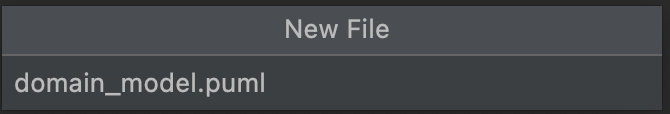

Workshop 1
Contents
Workshop 1¶
Note
The purpose of workshop 1 is to introduce yourself and get to know your tutor and teammates.
Overview of SWEN90007¶
Aims¶
One of the main challenges in developing enterprise-wide distributed systems is in choosing the right software architectures. In this subject students will study software architectures in depth and the principles, techniques and tools for creating, developing and evaluating software architectures.
Indicative Content¶
Topics covered in this subject will be drawn from: design styles and architectural patterns; design strategies; domain specific architectures; evaluation of designs; architectural design for non-functional requirements; and modelling architectures.
Learning Outcomes¶
On completion of this subject the student is expected to:
Analyse large scale and distributed systems and select appropriate architectures for them
Evaluate architectures both qualitatively and quantitatively
Make suitable trade-offs between different architectures
Assessments¶
There are 4 parts for assessments in this subject
Part |
Description |
Weighting |
|---|---|---|
1 |
Once you decide on your project description, identify the use cases necessary to meet the requirement specification for the application users. |
15% |
2 |
Design and implement your app as described in Application Domain and as defined by the use cases identified in Part 1. |
40% |
3 |
The ability to have multiple users in the application will be enabled. This gives place to concurrency issues that you must address. |
35% |
4 |
Produce a report reflecting on the performance of your system. |
10% |
Warning
Hurdle requirement: To pass the subject, students must obtain at least 50% (50/100) in the team based project.
Tutorials¶
Structure of Tutorials¶
Tutorials will primarily focus on group work. All subject material is introduced in lectures and tutorials are your chance to implement the content learned with your team with the support of your tutor. Please come to tutorials prepared to do work with your teammates and with questions for your tutor.
Contacting Tutors¶
All questions should be asked via discussion board. This allows students to learn from other students and also means teaching staff aren’t answering the same question 100 times. It also means students will get a quicker response.
If your question requires sharing code, you can post on private on discussion board - this is better than emailing as it allows your question to be answered by any teaching staff (which will get you a response quicker).
Frequently Asked Questions (FAQs)¶
There is a list of FAQs available in the left-hand side of these course notes.
GitHub¶
You should have received an invitation for the GitHub organisation that will be used for this project.
Note
Your repository must live inside the organisation, so teaching staff have access to mark your code.
Once you receive an invitation you should create a group and repository for your team.
Assessment 1¶
For the first assessment, you will be required to work in teams to create the use case descriptions and diagrams, and domain model of the project you have chosen.
Markdown Syntax for Creating Diagrams¶
To aid you in creating use case diagrams and domain models, today we will learn Markdown syntax for creating diagrams.
There are a number of different tools:
Tip
MermaidUML is JavaScript based so good for those with JavaScript knowledge.
They allow creating the following diagrams:
Sequence diagram
Use case diagram
Class diagram
Object diagram
Activity diagram
Component diagram
Deployment diagram
State diagram
Timing diagram
Set Up PlantUML¶
First, you will need to install GraphViz - an open source graph visualisation software that your computer will use to convert the text into graphics.
Second, install the PlantUML for IntelliJ plugin.
Third, open IntelliJ and create a new *.puml file:


Fourth, copy the below into a new markdown file.
Domain Model *.puml File
@startuml
Exam “1” – “1..” Question : contains > Exam “1” – “” Grade : relates to > Submissions “” – “” Question : answers > User “1” – “” Exam : creates > User “1..” – “0..” Subject : teaches > User “1..” – “0..” Subject : takes > User “” – “1” Submissions : submits > Subject “1” – “0..” Exam : includes > Submissions “0..” – “1” Exam : belongs to > Question <|– MultipleChoiceQuestion MultipleChoiceQuestion “1” – “2..*” Option : includes >
class User { id firstName lastName email }
class Grade { marks }
class User { }
class User { }
class User { }
class Subject { id name code year }
class Exam { id title }
class Question { }
class MultipleChoiceQuestion { }
class Option { }
class Submissions { }
@enduml
Use Cases Diagram *.puml File
@startuml ‘ https://plantuml.com/use-case-diagram
left to right direction
actor Admin actor Student actor Instructor
package “Examination Application” { usecase “Login” as UC1 usecase “Create exam” as UC2 usecase “Take exam” as UC3 }
Admin –> UC1 Student –> UC1 Instructor –> UC1 Instructor –> UC2 Student –> UC3
@enduml